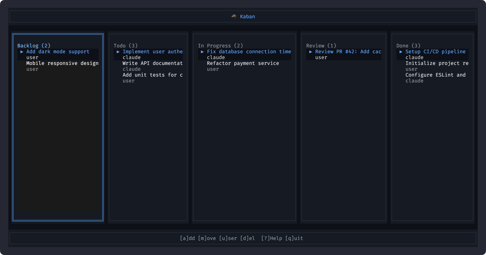
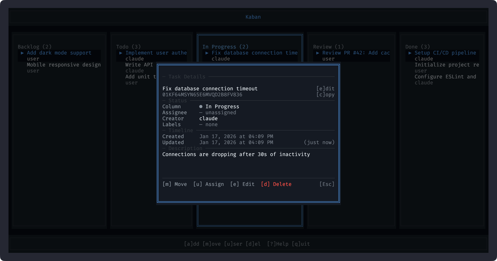

Kaban_
> kanban for ai agents_
[x] manage todos
[x] assign to agents
[x] single app, no servers
[x] tui + cli + mcp


kaban tui

// task details
View and edit tasks
task view

// why kaban
Built for developers and AI agents
Manage Todos
Track tasks with a proper Kanban board. Move between columns, set priorities, add descriptions.
Assign to Agents
Assign tasks to Claude, GPT, or any AI agent. MCP and CLI for both humans and AIs.
Single App
No servers, no cloud. One SQLite file. Works offline. Portable.
TUI + CLI
Interactive terminal UI for humans. Powerful CLI for scripts and automation.
// quick start
Up and running in 60 seconds
npx / bunx
zero install
# try without installing
npx @kaban-board/cli init --name "My Project"
npx @kaban-board/cli tui
# or with bun
bunx @kaban-board/cli tui
npm
global install
npm install -g @kaban-board/cli
kaban init --name "My Project"
kaban tui
homebrew
macos / linux
brew tap beshkenadze/tap
brew install kaban
kaban tui
from source
development
git clone https://github.com/beshkenadze/kaban
cd kaban && bun install && bun run build
task install// mcp integration
For AI Agents
Connect your AI coding assistant to Kaban via Model Context Protocol.
claude_desktop_config.json
{
"mcpServers": {
"kaban": {
"command": "npx",
"args": ["-y", "@kaban-board/cli", "mcp"],
"env": {
"KABAN_PATH": "/path/to/your/project"
}
}
}
}Available MCP Tools
kaban_add_task Add new taskskaban_list_tasks Query with filterskaban_move_task Move between columnskaban_complete_task Mark as donekaban_update_task Edit task detailskaban_status Board overview// cli reference
CLI Commands
kaban init
Initialize board
kaban add <title>
Add task
kaban list
List tasks
kaban move <id>
Move task
kaban done <id>
Complete task
kaban tui
Launch UI
kaban status
Board summary
kaban mcp
MCP server
// installation
Get Kaban
Prerequisites
With Task
git clone https://github.com/beshkenadze/kaban
cd kaban
task installManual
git clone https://github.com/beshkenadze/kaban
cd kaban
bun install && bun run build
alias kaban="bun run $(pwd)/packages/cli/src/index.ts"Claude Code Plugin
Recommended: Install the workflow plugin for TodoWrite sync and session persistence:
Claude Code CLI
# Add the marketplace
/plugin marketplace add beshkenadze/kaban
# Install the workflow plugin
/plugin install kaban-workflow@beshkenadze-kaban
+ MCP server auto-configured
+ TodoWrite sync
+ Session resume hooks
Manual MCP Setup
Or manually add Kaban MCP server to your AI coding assistant:
Claude Code / Desktop
mcp
// .mcp.json or claude_desktop_config.json
{
"mcpServers": {
"kaban": {
"command": "npx",
"args": ["-y", "@kaban-board/cli", "mcp"]
}
}
}
OpenCode
mcp
// opencode.json
{
"mcp": {
"kaban": {
"command": "npx",
"args": ["-y", "@kaban-board/cli", "mcp"]
}
}
}
Cursor / Windsurf
mcp
// MCP settings
{
"mcpServers": {
"kaban": {
"command": "npx",
"args": ["-y", "@kaban-board/cli", "mcp"]
}
}
}
Global Install
alternative
// If installed globally
{
"mcpServers": {
"kaban": {
"command": "kaban",
"args": ["mcp"]
}
}
}